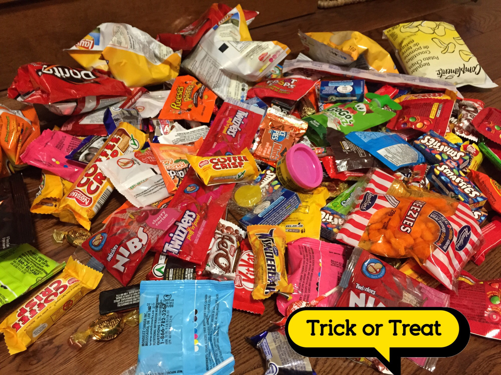

没怎么多拍.我简单写个repo.
学校是一个过Halloween很好得地方.
Haunted house做的很棒.是选修drama课的同学推荐的.Fiona同学(不是我伯母…)极力推荐我.
Bring your friend!!她这么说道.
跟游乐园的那种鬼屋质量差不多.
虽然这么说但是我没去过游乐园的鬼屋(怂……).
灯光打的很暗.所以道具的简陋都掩饰过去了.
但是音乐是光线调节的很好.一开始还使用了风.
有一个像用人骨祭奠的地方.有一个被关在大型牢房里的缝隙.有分尸魔.有从桌子底爬出来的囚徒.
最最喜欢的一个场景是一个像宿舍也像监狱的地方.
真的把床搬来了…木制两层的那种.
好像是有被子等等的.旁边还有很多书堆在那里.道具数目还是很齐全的.
一位囚徒坐在床上.二层很高.还有一位被手铐绑着,疯癫地喊着help me out.
那一块是从两个床铺间走过.就像是普通的宿舍内走过.我喜欢把场景摆在想日常一样的路上.
{kind=link}
{kind=link}
Esl的一位老师做了南瓜蛋糕.极好吃.
还发了糖果.这勾起了我今儿去要糖的兴致.
老师是make up做充分的人wwwwwww
还看到了一位匹克(不知道怎么拼……)做的很棒.
一些同学的make up太厉害了……(词穷.
Halloween要糖虽然是传统.但是很多房子的装饰真的太值得一看啦!!(没有怎么拍…悲伤.
一些蜘蛛网(棉网).墓碑(塑料或纸张).skeleton.还有传统的pumpkin!!
我才意识到这世界上比Fiona小姐(伯母)雕刻厉害的竟然有好多好多.
一些买回来的装饰也很有意思.碰一下就会出声help!!的骷髅…别吓到了!!!
不过去讨糖还有别吓到了…某位女士打扮得超用心(幽灵)然后BOO!!!
OMG.
虽然说是一项传统节日但并不是所有人都起劲的.
一些就是All right的表情.
但是有些完全不同wwwwww
有位大叔会打扮好然后问
I have questions for you.
Who am I?
(sorry……)
Oh you had not see the movie!
The nightmare before Christmas! You have to see it!
But you still can get some candies!
(Thank you very much.)
还有一位婆婆打扮成很老的一个卡通人物…没有记住名字非常抱歉…
一些人家就直接门口放个框装糖.还有张please take one的纸条.
一些人家只有小孩子在家.不出去要糖吗wwww
发现house的基本都有狗…还被舔手了ww我有点怕狗的(……
不过一些就是Hey!!!!的感觉ww
一些老人应该会很喜欢这样的活动.
小孩子人化妆得也很用心wwwww
基本都是全身套装.牛奶啊科学怪人啊prinecess叫不出名字的啊.
像我这样就带个头饰的太没有诚意了wwwww
跟朋友跑了两条街左右.虽然说是朋友,也只是刚交到的小学妹.
因为一直一直在温腻的环境中生活的里约得重新领悟交朋友的技巧.
好在两位还挺好说话.
这个另一个话题了.
最后. 隔壁来sleepover的小男孩好吵哦…………
边打字边向浴室走去结果因慢了两秒钟而被老弟一个箭步抢到了浴室.不开心.